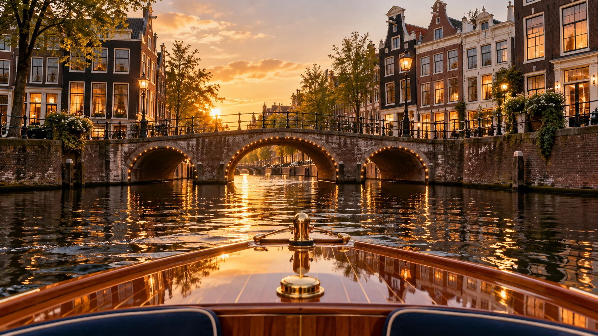

Time together
A private cruise for a personal occasion or time with friends.
Explore this optionYour people. Your pace. Your Amsterdam.
A private canal cruise for your occasion, with space to shape the experience around your group.
Plan your private cruisePrivate cruises since 2014

AI concept imagery · illustrative onlyStart with the kind of day you have in mind.
A private cruise for a personal occasion or time with friends.
Explore this optionBring colleagues or guests together on the canals.
Explore this optionShare your ideas for a special gathering on the water.
Explore this optionA MOMENT TO IMAGINE
A short visual impression of the experience. This AI-generated concept film does not show actual properties, vessels or business premises.
Press play to watch · 5 seconds
A SIMPLE FIRST STEP
Try the enquiry experience below. This is a design demonstration, so you do not need to enter any personal information.
For a real enquiry, use the official website or business contact details below.